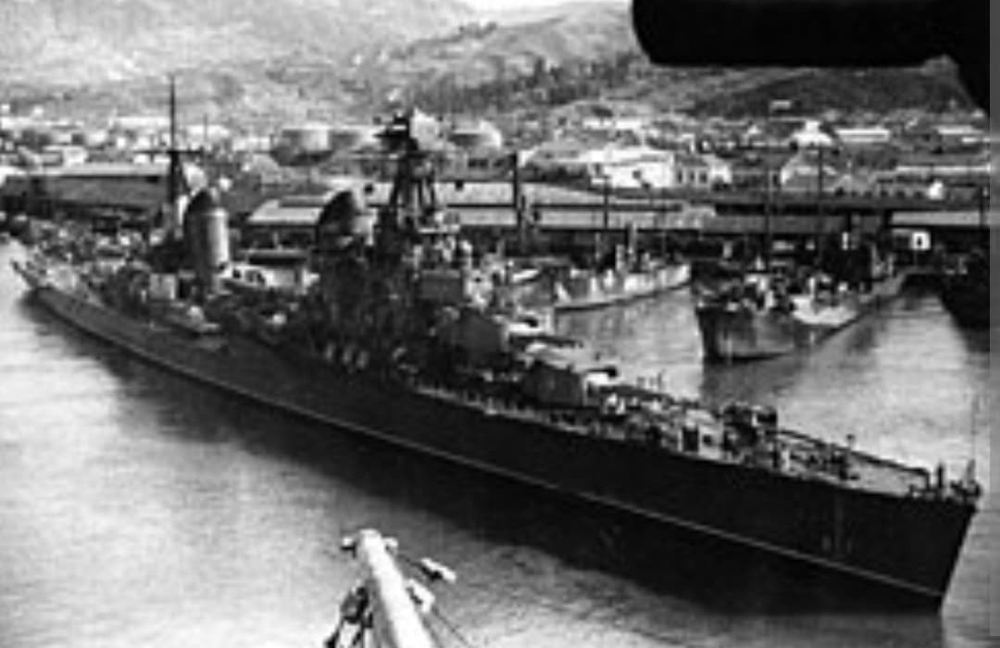
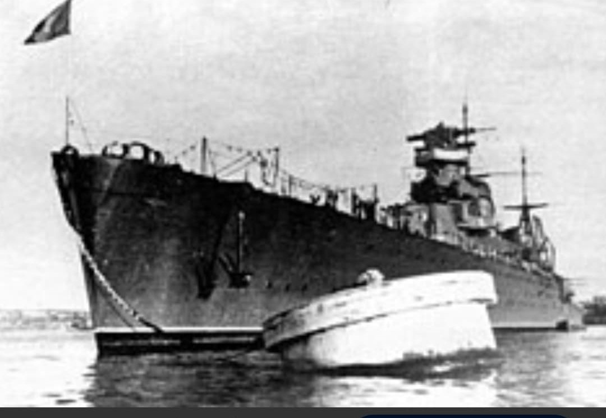
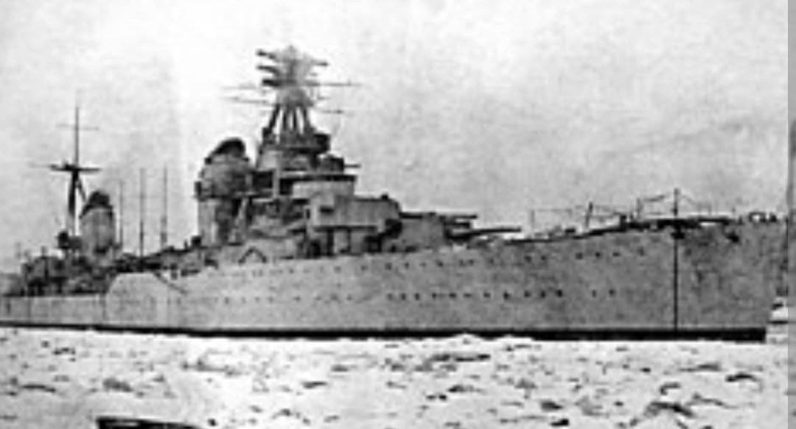

Le navire amiral de la Flotte de la Baltique et forteresse d'artillerie de Léningrad

Le Kirov est le premier croiseur lourd construit par l'URSS au titre du plan de modernisation navale des années 1930. Conçu avec l'aide des ingénieurs italiens de la firme Ansaldo, il intègre une artillerie principale unique de calibre 180 mm.
Doté d'une ligne effilée lui offrant une vitesse supérieure à 35 nœuds, le *Kirov* alignait 9 canons de 180 mm en trois tourelles triples MK-3-180.

Navire amiral lors de l'évacuation de Tallinn en août 1941, le *Kirov* passa la majorité de la guerre amarré à Léningrad, pilonnant sans relâche les positions d'artillerie allemandes assiégeant la ville.

Décoré du Drapeau rouge, le *Kirov* resta en service actif jusqu'au début des années 1970 comme bâtiment d'entraînement.
Page du Musée HOP WW2 – Section Marine Soviétique